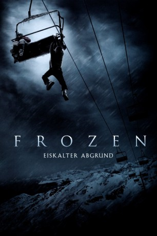

#7018 Frozen - Eiskalter Abgrund
Alternativ: Frozen
 
 IMDB-Wertung: 6.2 / 10
IMDB-Wertung: 6.2 / 10  Metascore: 0
Metascore: 0 
Ein spaßiger Ausflug auf die Piste, entwickelt sich für drei Studenten zum Alptraum ihres Lebens, als sie vor der letzten Abfahrt im Sessellift stecken bleiben Als die Pistenpatrollie die Nachtbeleutung abschaltet, erkennen Dan, Joe und Parker mit zunehmender Panik, dass man sie im Skilift hängend weit über dem Erdboden, vergessen hat. Ohne Aussicht auf Rettung, ist das Trio fest entschlossen verzweifelte Maßnahmen zu ergreifen, um dem eisigen Tod zu entkommen. Doch bald müssen die Drei feststellen, dass sie weitaus mehr zu fürchten haben als nur den eisigen Tod. Im Kampf ums Überleben müssen sie sich die Frage stellen, ob ihr Überlebenswille stark genug ist, um einem grausamen Tod zu entkommen...
Jahr: 2010
Dauer: 95 Minuten
FSK: 16
Land: USA Studio: Anchor Bay EntertainmentTonspuren: DTS - ,
Untertitel: Deutsch,
Auflösung: 1080p (1920x800) Größe: 7782 MB
Genre: Thriller
Regisseur: Adam Green
Drehbuch: Adam Green
Soundtrack:
Darsteller:
 Emma Bell als Parker O'Neil
Emma Bell als Parker O'Neil Shawn Ashmore als Joe Lynch
Shawn Ashmore als Joe Lynch Kevin Zegers als Dan Walker
Kevin Zegers als Dan Walker Ed Ackerman als Jason
Ed Ackerman als Jason Rileah Vanderbilt als Shannon
Rileah Vanderbilt als Shannon Kane Hodder als Cody
Kane Hodder als Cody Adam Johnson als Rifkin
Adam Johnson als Rifkin- Will Barratt als Sullivan , uncredited
 Adam Green als Guy on Chairlift #1 , uncredited
Adam Green als Guy on Chairlift #1 , uncredited- Joe Lynch als Guy on Chairlift #2 , uncredited
- John Omohundro als James , uncredited
- Cody Blue Snider als Twisted Sister Fan in Cafeteria , uncredited
- Chris York als Ryan
- Peder Melhuse als Driver
- Jesse Faggioli als Snowboarder , uncredited
- Tim Niverth als Friend , uncredited
Datei: X:\2010(A-F)\Frozen - Eiskalter Abgrund (2010, FSK16, 1920x800).mkv seit 17.09.2017
Festplatte: HD 2009(G-Z)-2010(A-F)
 Es gibt insgesamt 95 Filme in der Gruppe '2010(A-F)'
Es gibt insgesamt 95 Filme in der Gruppe '2010(A-F)'